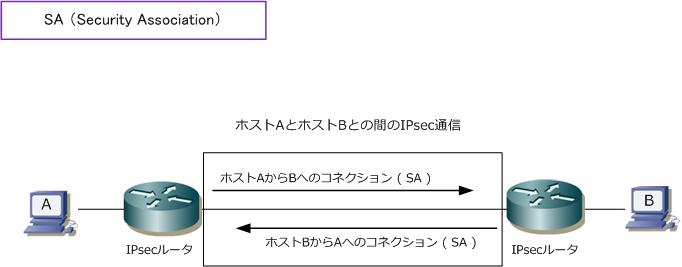
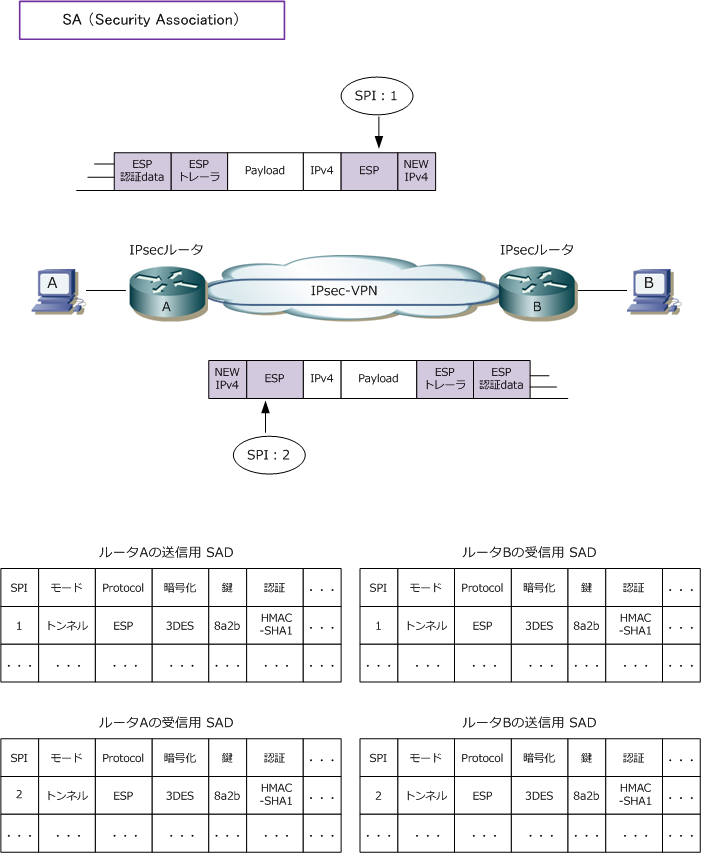

IPsec - SA ( Security Association )
SA（Security Association）
IPsecの構成要素であるAHやESPなどのプロトコルにより、パケットの暗号化や認証などを行えることが 分かりました。そして、ESPに暗号と認証の両方の機能が備わっていることから、実際のIPsec-VPNでは ESPだけを使用するのが主流であることが分かりました。さらに、IPsecの通信モードにはトランスポート モードとトンネルモードがあるが、トンネルモードによる通信が主流であることが分かりました。そして、
次にVPNゲートウェイ間でコネクションを確立する必要があります。このコネクションのことをIPsecでは SA（セキュリティアソシエーション）と呼びます。IPsecの全ての通信はこのSAを使用する事になります。 SAは一方通行のトンネルであるため、パケットを送受信するためには送信用のSA、受信用のSAの合計2つ が必要になります。また、SAはIPsecのカプセル化プロトコルに対して独自のものになることから、例えば AHのパケットとESPのパケットの両方を利用して相互にIPsec通信する場合、計4つのSAが必要となります。

それではSAを詳細に見ていきます。このようにIPsec機器の間には数多くのSAが発生することになりますが あるIPsecのパケットがどのSAのものであるのかは、AHやESPパケットフィールドの SPI で判断できます。 同じパラメータを使用しないとIPsecの通信ができないので、同じパラメータをSPIにより双方で管理します。 なおVPNのゲートウェイは、SAデータベース(SAD)というローカルDBの中に有効な全てのSAを保存します。

SAは概念的にはコネクションですが、実質的にはIPsecのパラメータのセットです。パラメータセットには SPI、プロトコル「AH または ESP」、IPsec通信モード「トンネルモード または トランスポートモード」、 暗号化「DES or 3DES or AES」、その暗号鍵、認証「HMAC-MD5 or SHA1」、認証鍵、シーケンス番号 カウンター、DSCP値、Path MTU、トンネルエンドポイントのIPアドレス、SAのライフタイムがあります。
IPsecの通信において、IPsec処理を行うパケットや行わないパケットを取り決める一連のルールのセットの事を SPD と言います。 このSPD（Security Policy Database）は、CiscoルータのコンフィグにおいてはIPsec処理の対象を指定する ACL を指しています。
このSAを自動的に生成、管理、更新することを可能にしたのがIKEです。次回はそのIKEについて解説します。